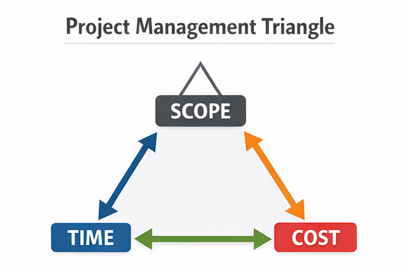

Scope Management
Define, control, and monitor project work to ensure successful delivery.
What is Scope Management

Scope management refers to the process of defining, controlling, and monitoring the work that must be completed in a project. It ensures that the project includes all the necessary tasks required to achieve its objectives while preventing unnecessary work from being added.
Proper scope management helps project teams stay focused on the agreed project goals and deliver the expected outcomes within the planned time and resources.
Importance of Scope Management

Effective scope management is essential for successful project delivery. It helps teams clearly understand what is included in the project and what is not. This clarity reduces misunderstandings and ensures that the team works toward the same objectives.
Scope management also plays an important role in preventing scope creep, which occurs when additional requirements or changes are introduced without proper evaluation or approval.
- Clear definition of project boundaries
- Better planning and resource allocation
- Improved communication among stakeholders
- Prevention of uncontrolled changes
- Increased likelihood of delivering the project successfully
Preventing Scope Creep

Scope creep can occur when new requirements are added during the project without proper control. To prevent this, project managers and Scrum Masters should ensure that the project scope is clearly defined and documented.
- Clearly defining project requirements
- Maintaining a well-structured backlog
- Reviewing and approving changes before implementation
- Communicating scope changes with stakeholders
- Regularly monitoring project progress
By applying these practices, teams can maintain focus on project goals and deliver value effectively.